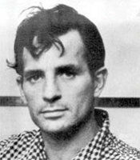

(1922 – 1969)

'60'lı yıllarda tüm dünyayı saran devrimci zihniyetin yansımalarından biri olan hippi hayat tarzının köklerine baktığımızda, "Beat kuşağı" adı verilen sanatçıları buluruz. Beat felsefesinin kökenine indiğimizde de karşımıza Jack Kerouac çıkar. Yazdığı "Yolda" romanıyla tüm bir kuşağın hislerini çok iyi dile getiren Kerouac, nefret ettiği şöhretin girdabına kendisi de kapılmıştır.
Tam adı "Jean-Louis Lebris de Kerouac" olan Jack Kerouac (okunuşu: Cek Keruak) 12 Mart 1922 tarihinde Massachusetts eyaletinin Lowell kentinde dünyaya geldi. Babası Léo-Alcide Kéroack ve annesi Gabrielle-Ange Lévesque, Quebec'in yerlilerinden Fransız kökenli Kanadalılardı. Aile daha sonra Lowell'a yerleşmişti. Jack Kerouac, "Jean Louis Kirouac" adıyla vaftiz edildi. Ailenin anadili evde konuşulan ve "joual" adı verilen Quebec Fransızcasıydı, bu nedenle Jack İngilizce'yi ancak ilkokula başladıktan sonra öğrendi.
Kerouac 1922'de dört yaşındayken abisi Gérard, daha sonra Visions of Gerard romanında anlatılacak romatizmal bir hastalık sonucu dokuz yaşında öldü. Annesi koyu bir Katolik idi ve kocasının içki, tütün ve kumara düşkünlüğü arttıkça inancı derinleşti. Kerouac annesine çok bağlıydı, ondan çok etkilendi ve ileride ondan "âşık olduğu tek kadın" olarak bahsetti.
Jack, Amerikan futbolu bursu kazanarak New York'ta Columbia Üniversitesi'ne girdi. Ailesi de onunla birlikte Queenns'e taşınmıştı, ancak geçirdiği ağır bir sakatlık ve çalıştırıcıyla sürtüşmeleri sonucu spor kariyeri sönünce bursu yenilenmedi. Babası da işini kaybedip alkolün pençesine düşünce Jack üniversiteden ayrıldı ve bir süre New York'un Upper West Side mahallesinde kız arkadaşı Edie Parker ile yaşadı. Son bir çare olarak orduya katılıp II. Dünya Savaşı'na gitmeyi düşünen Jack, kabul edilmeyince bir sahil kasabası olan Merchant Marine'e takılmaya başladı. Denize açılmadığı zamanlarda ailesinin pek onaylamadığı arkadaşlarıyla New York gezilerine çıkıyordu. Romanlarında hep bahsedeceği, Beat kuşağının çekirdeğini oluşturan kişilerle burada tanıştı: Allen Ginsberg, Neal Cassady ve William S. Burroughs.
Neal Cassady ile Amerika boyunca yolculuklara çıkmaya başlayan Kerouac, bu arada kurgusuz, hiç düşünmeden, sadece yaşadıklarını anlatan yazılar kaleme almaya başladı. Yazdıklarının yayımlanacak işler olduğunu bile düşünmeden, sadece karalamalar yaparak ortaya koyduğu bu notlar sonradan tüm bir Beat kuşağını en derinden etkileyecek olan Yolda romanına dönüşecekti.
1950'ler boyunca oradan oraya gezip birbiri ardına yayımlanmayacak (ve yayımlanmamış) romanlar yazan Kerouac, Ginsberg ve arkadaşlarıyla takılırken Zen şairi Gary Snyder ile tanıştı. Snyder'ın Budizm'le olan ilişkisini ve mutluluğunu gören Kerouac da Budizm'le yakından ilgilenmeye başladı. Bu dönemde yazdığı Zen Kaçıkları adlı roman, 1955 yılında Kerouac ve Snyder'in ABD'nin ulusal parklarından olan Yosemite Parkı'ndaki bir dağa tırmanışlarını anlatan, ama aslında insanın iç aydınlanmasına göndermelerde bulanan bir yapıttır.
Sonunda 1957 yılında basılan Yolda, edebiyat dünyasında olay oldu. Dünyanın her yerinde insanlar bu romanı konuşuyor ve binlerce insan benzeri yolculuklara çıkma hayali kuruyor hatta çıkıyordu. Kerouac ise herkesten çok şaşkındı. Hayatı boyunca insanlardan kaçmış olan bir adam birden bir medya malzemesi olmuş, kendisinden "Beat kuşağının edebiyat ikonu" gibi sözlerle bahsedilir olmuştu. Bazı eleştirmenler ise Beat akımının geçici bir moda olduğunu savunuyor ve Kerouac'ı acımasızca eleştiriyorlardı. Bu da yazarı çok üzüyordu, çünkü Beat belki modaydı, ama onun yazdıkları edebiyattı. Bu noktada Kerouac büyük bir hata yaptı ve medyanın onu kullanmasına izin verdi. Her dergiye yazı yazıyor, her televizyon programına çıkıyor ve gece gündüz sarhoş geziyordu. Bir ara kendine gelen Kerouac yaptığı hatayı anlayıp düzelmeye çalıştıysa da artık çok geçti. Son büyük romanı Big Sur bu dönemi anlatır. Kerouac daha sonra California'yı terk edip Long Island'a annesinin yanına taşındı, ama daha sonraki yapıtları artık eski zihin açıklığını taşımıyordu.
Önce eski semti Lowell'a taşınan Kerouac, sonraları tekrar Florida'ya döndü. Aşırı ölçüde alkol kullanmayı bir türlü bırakamayan Jack Kerouac 21 Ekim 1969 tarihinde, sirozdan kaynaklanan şiddetli bir iç kanama geçirerek evinde öldü.
Seçme Romanları: Ve Hippopotamlar Tanklarında Haşlandılar (1945, 2008), Yolda (1957 – Ayrıntı Yayınları, 2012), Zen Kaçıkları (1958 – Ayrıntı Yayınları, 2012), Yeraltı Sakinleri (1958 – Ayrıntı Yayınları, 2010), Düşler Kitabı (1960)